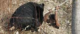

Free Egypt DVDs
Six free DVDs in The Times, starting Saturday. View clips here
Navigation - link to other main sections from here
Nepal humbles its god-king
In a savage reversal of fortune, the government will bring forward a bill this week to restrict the king’s power of succession ahead of an assembly that may topple the monarchy once and for all.
In the space of three months, Gyanendra, 59, has fallen from absolute monarch with the power to appoint ministers, judges and generals, to tax-paying mortal with three purely ceremonial duties.
He merely accepts the credentials of new ambassadors, visits a girl-goddess at the temple where he was formerly patron and receives a priest who flashes a bejewelled undergarment in a holy ceremony.
The government’s decision to remove Gyanendra and his wife Queen Komal as patrons of the Lord Pashupatinath temple in Kathmandu followed allegations that the palace was siphoning off donations.
Gyanendra’s decline began earlier this year when he ignored Indian pleas to restore democracy after seizing absolute power in 2005 in the hope of defeating Maoist rebels controlling the countryside. His downfall gathered pace in April when demonstrations forced him to reinstate parliament.
Since then parliament has purged the words “His Majesty’s” from the government’s title, absorbed the royal household staff into the civil service and brought palace finances under government control.
Baburam Bhattarai, the Maoist leader, has stepped up pressure on the government to proclaim a democratic republic.
Also in World News
Also in News
Times Recommends
US elections blog
Smackdown in Vegas
Hillary turned the tables on Obama at the latest debate, says Gerard Baker, US Editor
Savaged in the bearpit
A Kashmiri hunter fell into his own bearpit, with disastrous results
The Bugle
Satirical podcast
"The King of Spain told Chavez to "shut up", which really is international politics at its sparkling best"
Most Read
Skip Most ReadToday
- Traces of DNA from Meredith’s blood...
- Russian claims he killed 'Buster' Crabb, the...
- House price growth to collapse next year
- America suffers an epidemic of suicides...

Focus Zone
Business Ideas
12 Business ideas that are changing the world, listen to our podcasts by leading business people
QUICKLINKS
Now Interactive
Love Sudoku? Play our brand new interactive game: with added functionality and daily prizes.
Forget burnout, boreout is the new office disease
Are you irritable when you return from work? Drained of emotion? You could be suffering from boreout
The Bugle Podcast - Immigration Everywhere
John Oliver and Andy Zaltzman reveal that immigrants are putting our scapegoats out of work
BMW X5
Living in the city and buying an off-roader is like permanently wearing a condom for the one day a month you might get lucky, says Clarkson
Britain's best 50 days out
The best pub gardens, moonlit walks, ice cream, boat rides, festivals, beaches, picnics, cottages in Britain (and a couple in Ireland)
Photo Galleries
Pictures: Image of the Day gallery
A selection of photographic highlights from the last fortnight as featured in T2
Business City Guides
Overseas contacts and local business information
Search our archive
The Times and The Sunday Times articles from 1985
Times Online Jobs
From grad to exec, make the most of your career
Cars
Skip Cars of the Week
2003/03
£26,000
NW England
2008 model
£235,000
East Anglia
2007/07
£224,950
The Midlands
Great car insurance deals online
Jobs
Skip Jobs of the Week
£38-45K
DWC
South East
Visit Times Online Appointments for the latest job opportunities working for leading companies.
£
£19k - £39k
Enworks
North West
Circa £70k
Staffordshire University
Staffordshire
Properties
Beautiful 4 bedroom, 3 recep property
Guide Price £725,000
Visit Times Online Properties for Homes for Sale or Rent in assoication with PropertyFinder.com
Residential development site with planning permission
£1,500,000
Great deals online
Holidays
Skip Travel of the Week
14 nights Bangkok, Sydney & Reef, 5* Hotels and flights with Qantas
From £1639pp
7 nights Amazing Orlando including non-stop Virgin Atlantic flights
From £489 per person
Including FREE watersports & activities!
From just £699pp
Great deals online